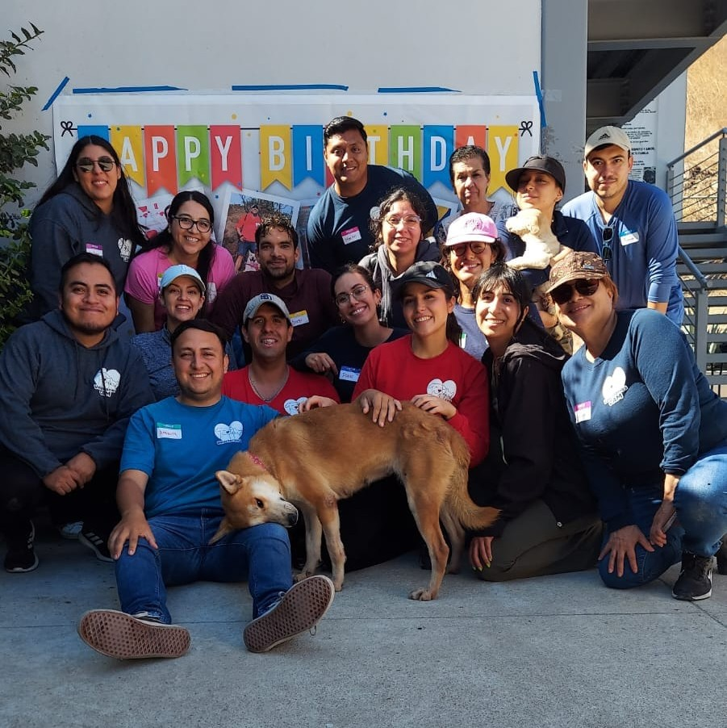

Este espacio fue creado por voluntarios para compartir información sobre animales de compañía, adopción, pérdidas, fomentar la adopción responsable, esterilización, así como orientación sobre el maltrato animal y la rehabilitación emocional 🐕🐈⬛ 🐾
Información de contacto
- 🏠 Dirección: Blvd Insurgentes S/N, Río Tijuana 3ra etapa, Tijuana BC
- 📍 Área de servicio: Tijuana, Península de Baja California, México
- ✉️ Correo electrónico: camtyvoluntarios@gmail.com
- 📷 Instagram: @voluntariostj